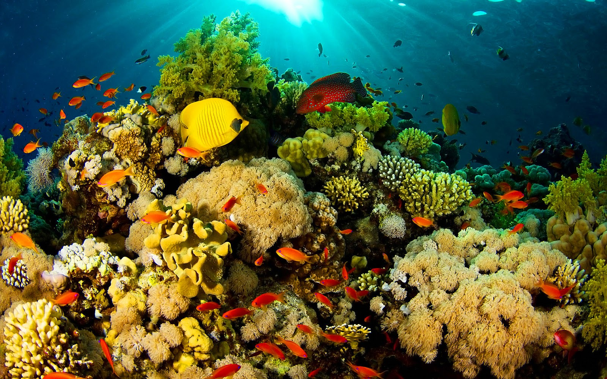
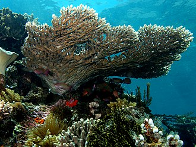
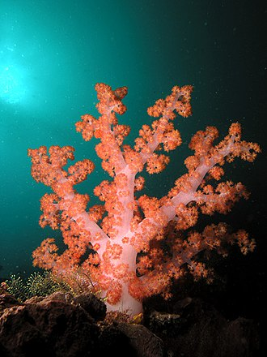
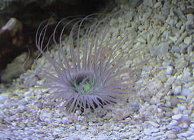

Anthozoa includes the classes Hexacorallia (Hard Corals), Octocorallia (Soft Corals), as well as Ceriantharia (tube dwelling anomonies)
Corals, anemones and jellies are related and all classified in the phylum Cnidaria or “stinging needles.” The animals in this group are aquatic, possess stinging cells within their tissues and have a body plan characterized by radial symmetry, which allows all parts of their bodies to be equally receptive and responsive to predator and prey. These animals have a single opening that serves as both the mouth and the anus. Tentacles with stinging structures, called nematocysts, usually surround this opening. These stinging cells, triggered by touch or chemical stimulus, can contain toxins or can be sticky.
Within the phylum Cnidaria, the class Anthozoa includes corals, anemones, sea pens and seafans. Anthozoa consists of 10 orders and thousands of species. Adults are attached to the seabed, but their larvae are free-floating and can drift to new settlements. Anthozoans can secrete a nonliving substance around the outside of the body to support and protect their soft body tissues. Coloration can vary from red, pink and purple to yellow, blue and orange. While some are only a few inches tall, others can scale several feet.
The fossil record of Anthozoa extends back 550 million years. The oldest known Anthozoans, polyp-like fossils, come from the Vendian (late Precambrian) period. True corals appeared later, during the Cambrian period. Some species living today first appeared in the middle Triassic period — around the same time as early dinosaurs!
Coral reefs rival rainforests in diversity of life. Together, they hold the most diverse ecosystems on the planet. Living reefs cover more than 360,000 square miles (936,000 square kilometers) and harbor one of every four ocean species known to man, yet they cover less than 0.1 percent of the entire ocean.
They also provide more than a home for fish and other reef dwellers; coral reefs act as an important buffer between land and the daily erosion from waves or occasional storm surges. They often protect a back-reef area of rich productive habitats creating a nursery for the juvenile stages of ocean life.
Coral reefs also support the tourist industry and a strong fishing industry. Organisms found on coral reefs have provided key ingredients for innumerable medical compounds that treat everything from asthma and cancer to HIV and still show potential for future pharmaceutical discoveries.
Subclasses of Anthozoa:
There are three Subclasses of Anthozoa: Hexacorallia (stony corals), Octocorallia (Octocorals), and Ceriantharia (Tube-dwelling anemones)
Hexacorallia is a subclass of Anthozoa comprising approximately 4,300 species of aquatic organisms formed of polyps, generally with 6-fold symmetry. It includes all of the stony corals, most of which are colonial and reef-forming, as well as all sea anemones, and zoanthids, arranged within five extant orders.[2] The hexacorallia are distinguished from another class of Anthozoa, Octocorallia, in having six or fewer axes of symmetry in their body structure; the tentacles are simple and unbranched and normally number more than eight.[3] These organisms are formed of individual soft polyps which in some species live in colonies and can secrete a calcite skeleton. As with all Cnidarians, these organisms have a complex life cycle including a motile planktonic phase and a later characteristic sessile phase. Hexacorallia also include the significant extinct order of rugose corals.
Subclass Octocorallia, Octocorals: Despite sharing a similar appearance with stony corals, soft corals, sea pens, gorgonians and sea fans do not build the hard, calcium-carbonate skeleton of stony corals. Instead, these corals may create some internal structural supports that allow them to grow vertically but still sway with ocean currents. Soft corals are always colonial and grow with eight-fold symmetry, which means their tentacles come in groups of eight — hence the name Ocotocoral. Octocorals include the orders Alcyonacea and Helioporace.
Subclass Ceriantharia, Tube-dwelling Anemones: This subclass looks similar to sea anemones, but tube-dwelling anemones are known for being solitary and living buried in soft sediments. They live inside tubes made of secreted mucus and organelles, and can recede into these tubes for protection. Ceriantharia includes the orders Spirularia and Penicillaria.
